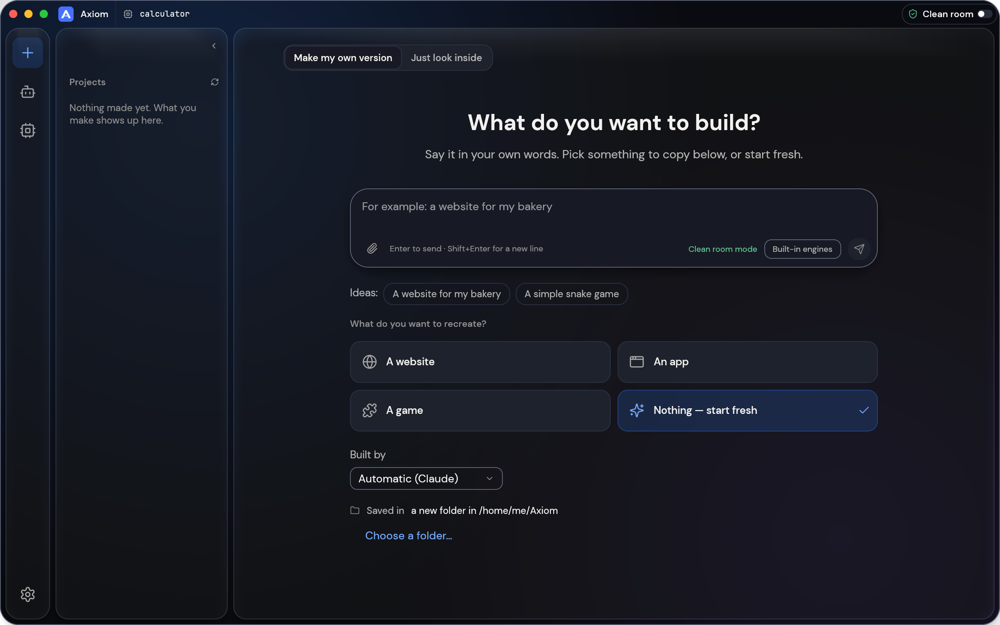

macOS
Apple silicon, as a disk image.
Download .dmgOpen source · Rust · Early development
Point Axiom at an app, a game, a website or a file. Ask a question and get an answer that shows its evidence, what was seen, what was worked out and what is still unknown. Then let an AI agent build and check a version of your own.

Download
Early builds, not signed or notarized yet. Each one carries the local model server, the Unicorn helper (GPL-2.0, source included) and, where the system allows, Ghidra with Java.
Apple silicon, as a disk image.
Download .dmg64-bit. The installer carries the app; the portable zip also carries Ghidra, Java and the model server.
Download .msi Portable .zip64-bit, AppImage, .deb or .rpm.
Download AppImage .deb .rpmPhone app, arm64: looks inside apps and talks to a model server you run.
Download .apkAll files and checksums are on the releases page. A button opens that page until a build is published.
How it works
Open a program, APK, game, site or file. Axiom reads its structure with its own Rust analysers; Ghidra is an optional extra.
Every result is an evidence record: what was observed, what was derived, how sure it is and what could not be checked.
An agent studies the evidence, builds a separate project, and checks it against the original, with open questions kept in front of you.
What is in the box
The desktop app, the command line and the MCP server for coding agents all call the same tools, so anything you can click you can also script.
Formats for ELF, PE, Mach-O, WebAssembly, DEX, APK, Electron bundles and more, with disassembly, call graphs and pseudo-C written in Rust.
Try a few instructions without running them on your machine. The Unicorn-based helper is a separate program with instruction, time and memory limits.
Until you turn on Deep mode, Axiom only watches from outside, like a visitor or user would, and never looks inside the original.
No panics in production code, bounded recursion and capped allocations, because the files people study are the ones that fight back.
Local AI
Pick a recommended model that fits this computer's memory, or search Hugging Face for GGUF models. Downloads are checked against the hub's own SHA-256. Axiom starts llama.cpp's server on a free port that listens only on your machine, and adds it as an AI you can pick in the prompt box.
models_hub_searchmodels_file_downloadmodels_server_startChecked on macOS arm64 with Llama 3.2 1B: installed, downloaded with its hash checked, started, answered, stopped. Other systems are not tested yet.
Platforms
Early builds are on the releases page when a package run has finished; otherwise build from source.
Status and licences
Axiom builds on Axiom (MIT or Apache-2.0). Inherited features are not all re-verified here.
Axiom is MIT or Apache-2.0. The Unicorn helper is GPL-2.0-only and ships as a separate program with its source. Models keep their own licences.
Signed and notarized releases, Linux and Windows checks by hand, the Android companion client, and a legal review of the GPL helper.
Read the code, follow the work, or help build it.
Open the repository